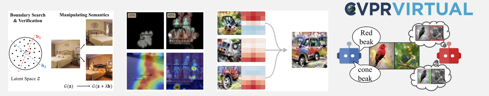

CVPR 2018 Tutorial onInterpretable Machine Learning for Computer Vision |
||
Room 355 EF, Salt Lake City, USA |
||

Complex machine learning models such as deep convolutional neural networks and recursive neural networks have made great progress in a wide range of computer vision applications, such as object/scene recognition, image captioning, visual question answering. But they are often perceived as black-boxes. As models are going deeper in search of better recognition accuracy, it becomes even harder to understand the predictions given by the models and why.
This tutorial is to broadly engage the computer vision community with the topic of interpretability and explainability in models used in computer vision. We will introduce the definition of interpretability and why it is important, and have a review on visualization and interpretation methodologies for analyzing both the data and the models in computer vision.
14:10 - 14:50 . Talk 1 by Been Kim: Introduction to Interpretable Machine Learning PDF Youtube Mp4(talk1+talk2)
14:50 - 15:30 . Talk 2 by Laurens van der Maaten: Dos and Don'ts of using t-SNE to Understand Vision Models PDF Youtube
15:30 - 16:15 . Break.
16:15 - 16:55 . Talk 3 by Bolei Zhou: On the Importance of Individual Units in Deep Networks PDF Youtube Mp4(talk3+talk4)
16:55 - 17:35 . Talk 4 by Andrea Vedaldi: Understanding Deep Networks using Natural pre-images, Meaningful Perturbations, and Vector Embeddings PDF Youtube
Please contact Bolei Zhou if you have question. The webpage template is by the courtesy of awesome Georgia.